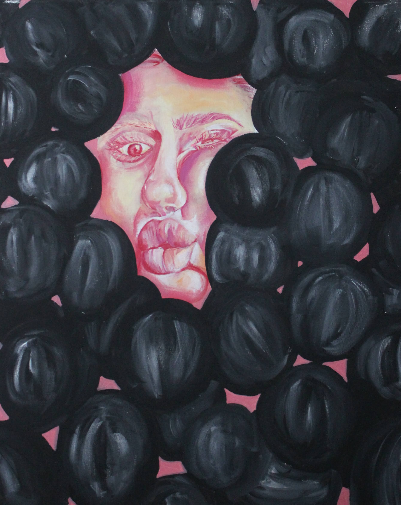

My Art
Acrylic Painting
Welcome in to my art page! Here you will find artwork that I have created throughout the
years in different medium types. Enjoy!


I also enjoy acrylic painting. I have used acrylics for most of my life, but have really learned the medium within the past 5 years. It dries very quickly which allows you to work fast. I typically use acrylic paints for a wide variety of subjects. This could include realism, abstraction, and other genres. The painting under the name of "Unknown" is one I made with no plan going into it. I named it “Unknown” because I was not certain of how the painted was going to end up. I added lots of layers and different things until I was satisfied.

Acrylic Painting Catalog
| Title | Year | Description |
|---|---|---|
| Jerry Garcia Portrait | 2024 | Psychedlic colored Jerry Garcia singing and playing guitar with Woodstock Festival newspaper clippings for the background |
| Chance the Rapper Portrait | 2023 | Bright and playful capture of Chance the Rapper from a music video |
| Sunflower Bench Commission | 2024 | A commissioned memorial bench incorporating sunflowers, butterflies, rainbows and vines |
| Unknown | 2022 | A personal acrylic piece with cool and warm tones following a more modern abstract style with lines and shapes |
| Abstract Figure Painting | 2022 | A graphic depiction of a female body surrounded by varying circles of color |
| Suffocation Self-Portrait | 2021 | A self portrait that is surrounded by dark spheres that are closing in on the face-- symbolic of stress, fear, and anything in between |